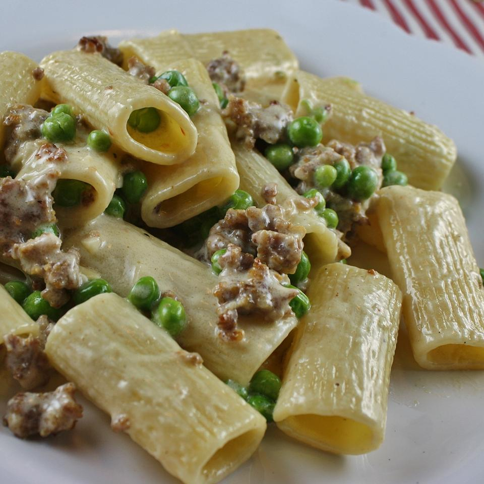

Pasta with Peas & Sausage

Description
Delicious and creamy. Something different for pasta.
Ingredients
- 1 pound rigatoni pasta
- 2 tablespoons olive oil
- 1 clove garlic, minced
- 1 pound sweet Italian sausage, casings removed
- 12 ounces frozen green peas
- 1½ cups heavy cream
- 4 tablespoons butter
- 2 tablespoons grated Parmesan cheese
Steps
- Bring a large pot of lightly salted water to a boil. Add pasta and cook for 8 to 10 minutes or until al dente; drain.
- In a skillet heat oil and saute garlic over medium heat. Brown sausage in skillet. Once brown add frozen peas and simmer for 5 minutes. Slowly add heavy cream and butter to skillet; bring to a slight boil. Add more cream if necessary. Cook for 5 minutes. Toss with cooked pasta and top with Parmesan cheese.